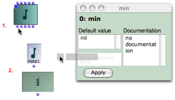
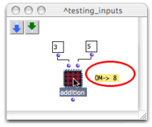

OpenMusic DocumentationHiérarchie de section : OM 6.6 User Manual > Visual Programming II > Abstraction > Application > Input Boxes
OpenMusic DocumentationHiérarchie de section : OM 6.6 User Manual > Visual Programming II > Abstraction > Application > Input Boxes
Navigation : page précédente | page suivante
Attention, votre navigateur ne supporte pas le javascript ou celui-ci à été désactivé. Certaines fonctionnalités de ce guide sont restreintes.
Input Boxes
The inputs of an abstraction are represented inside the patch by green boxes. When these boxes are assigned default values , the patch can be evaluated internally and autonomously.
Editing Inputs

|
To edit the inputs of an abstraction, double click on an input box to open its editor.The editor displays :
To edit information :
|
To display the information :
|

|
Using Default Value
Default values allow to evaluate an internal patch from the inside .
Using an Instance as a Default Value
The lower left frame of the input editor can take an instance as default input value.
To add an instance or a global variable there, drag an instance box from a patch editor – or from the Globals package to this frame.

An instance can be created out of a factory box and dropped, as well as a global variable, from a patch editor to an input editor.
Reminder
SHIFT + Cmd click on an outlet to create an instance in a patch editor.
About Instances and Global Variables :
Internal Evaluation
Default values are designed to test if a patch works with an internal evaluation.
To evaluate a patch internally, Cmd click on the internal output box.

Default values are ineffective as soon as a patch is evaluated from the outside .
Note
Default values are also ineffective if values are sent to the patch from other boxes. |

|
Références :
Plan :
Navigation : page précédente | page suivante
A propos...(c) Ircam - Centre Pompidou